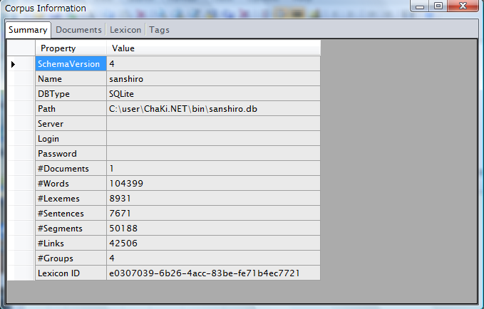

条件パネルの"Corpus"タブにおいて、一つのコーパスを選択状態にして"Show"ボタンをクリックすると、そのコーパスの基本的な統計情報や語彙リスト等を表示することができます。

"Corpus Information"ダイアログは、4つのタブに分かれ、それぞれ下記のような情報が含まれています。（Lexiconのロードに多少時間がかかります。）
| Tab | 項目 | 内容 |
| Summary | ||
| SchemaVersion | DB全体のスキーマバージョン | |
| Name | DBの名称（SQLiteの場合は拡張子を除くファイル名と一致） | |
| DBType | DBMSの名称: SQLite/MySQL/PostgreSQL/SQLExpress | |
| Path | SQLiteの場合、DBファイルのパス | |
| Server | SQLite以外の場合、サーバ名 | |
| Login | SQLite以外の場合、サーバへのログイン名 | |
| Password | SQLite以外の場合、サーバへのログインパスワード（見えません） | |
| #Documents | コーパスに含まれるDocument数 | |
| #Words | 語数 | |
| #Lexemes | 語彙数（異なり） | |
| #Sentences | 文の数 | |
| #Segments | Segmentインスタンスの数 | |
| #Links | Linkインスタンスの数 | |
| #Groups | Groupインスタンスの数 | |
| LexiconID | コーパス作成時に使用した語彙のID（内部的に使用される） | |
| Documents | コーパスに含まれるDocumentおよびテキスト先頭部分の一覧 | |
| Lexicon | コーパスに含まれる語彙の一覧 | |
| Tags | コーパスに定義されているTagSet（現状ではデフォルトのID=0のTagSetを表示） | |
| Segment | Segment Tag一覧 | |
| Link | Link Tag一覧 | |
| Group | Group Tag一覧 |